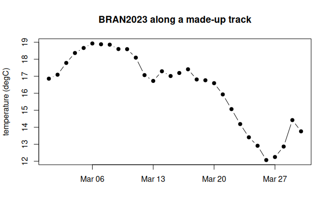

A virtual Zarr store holds no array data. It holds references: for each chunk, which file holds its bytes and at what offset. The files are the original NetCDF, HDF5 or GeoTIFF archives, served as they are. zaro reads these reference stores directly:
| Source | Address |
|---|---|
| kerchunk JSON | reference+json:///path/refs.json |
| kerchunk Parquet | reference+parquet:///path/refs.parquet |
| VirtualiZarr Parquet manifests | virtualizarr://https://.../dataset.parq |
| byterefs SQLite tables | byterefs:///path/store.sqlite |
Once opened, a virtual store behaves like any other:
zaro_dataset(), zaro_read() and
zaro_array() work the same.
BRAN2023 ocean temperature
BRAN2023 is CSIRO’s ocean reanalysis: daily temperature at 51 depths on a 0.1 degree grid, 2010 to 2024, about 11 TB as NetCDF on NCI’s THREDDS server. This VirtualiZarr reference store, kept on GitHub, points into those NetCDF files.
library(zaro)
options(zaro.verbose = FALSE)
bran <- zaro("virtualizarr://https://raw.githubusercontent.com/mdsumner/virtualized/refs/heads/main/remote/ocean_temp_2023.parq")
ds <- zaro_dataset(bran)
ds
#> <zaro_dataset> 11 array(s) [zaro::VirtualiZarrStore]
#> Time float64 (Time: 5479)
#> Time_bnds float64 (nv: 2, Time: 5479)
#> average_DT float64 (Time: 5479)
#> average_T1 float64 (Time: 5479)
#> average_T2 float64 (Time: 5479)
#> nv float64 (nv: 2)
#> st_edges_ocean float64 (st_edges_ocean: 52)
#> st_ocean float64 (st_ocean: 51)
#> temp int16 (xt_ocean: 3600, yt_ocean: 1500, st_ocean: 51, Time: 5479)
#> xt_ocean float64 (xt_ocean: 3600)
#> yt_ocean float64 (yt_ocean: 1500)
#> attributes: 9temp is packed as 16-bit integers; its attributes say
how to unpack it:
ds$arrays$temp@attributes[c("scale_factor", "add_offset", "_FillValue", "units")]
#> $scale_factor
#> [1] 0.00778222
#>
#> $add_offset
#> [1] 245
#>
#> $`_FillValue`
#> [1] -32768
#>
#> $units
#> [1] "degrees C"Extract a track
A lazy array with cf = TRUE unpacks values and masks the
fill. Here is a made-up 30-day track off eastern Tasmania, diving from 5
to 200 m: one value per day, from 30 different chunks in 30 different
NetCDF files.
temp <- zaro_array(ds, "temp", cf = TRUE) # xt_ocean, yt_ocean, st_ocean, Time
dim(temp)
#> [1] 3600 1500 51 5479
coord <- function(nm) as.vector(zaro_read(bran, nm, meta = ds$arrays[[nm]]))
xt <- coord("xt_ocean"); yt <- coord("yt_ocean"); st <- coord("st_ocean")
units <- ds$arrays$Time@attributes$units; units
#> [1] "days since 1979-01-01"
## time steps are at midday (x.5 days): floor them to their calendar day
time <- as.Date(sub("^days since ", "", units)) + floor(coord("Time"))
track <- data.frame(date = as.Date("2023-03-01") + 0:29,
lon = seq(147.8, 152.5, length.out = 30),
lat = seq(-43.5, -39.0, length.out = 30),
depth = round(5 + 195 * (1 - cos(seq(0, pi, length.out = 30))) / 2))
near <- function(coord, v) vapply(v, function(z) which.min(abs(coord - z)), 1L)
idx <- cbind(near(xt, track$lon), near(yt, track$lat), near(st, track$depth),
near(as.numeric(time), as.numeric(track$date)))
system.time(track$temp <- temp[idx])
#> user system elapsed
#> 0.539 0.128 1.024
head(track)
#> date lon lat depth temp
#> 1 2023-03-01 147.8000 -43.50000 5 16.85644
#> 2 2023-03-02 147.9621 -43.34483 6 17.08991
#> 3 2023-03-03 148.1241 -43.18966 7 17.78253
#> 4 2023-03-04 148.2862 -43.03448 10 18.36619
#> 5 2023-03-05 148.4483 -42.87931 14 18.66192
#> 6 2023-03-06 148.6103 -42.72414 19 18.92651
plot(track$date, track$temp, type = "b", pch = 19, xlab = "", ylab = "temperature (degC)",
main = "BRAN2023 along a made-up track")
All 30 byte ranges are fetched concurrently through one connection
pool. That’s the default, up to 8 connections per host
(options(zaro.max_con)).
byterefs tables
byterefs is a
specification for exactly this kind of table: one row per chunk with its
file, offset and size, plus what a reader needs to decode it. raad.virtualize
produces byterefs stores as SQLite files. zaro reads them with
byterefs:// and applies the store’s default path remapping
(meta.default_target), so a table scanned on a local mirror
reads from its public copy:
store <- zaro("byterefs:///path/to/store.sqlite") # default target
store <- zaro("byterefs:///path/to/store.sqlite", target = "public") # another targetThe specification is still moving (the published Parquet layout is not settled), so this part of zaro will follow it.